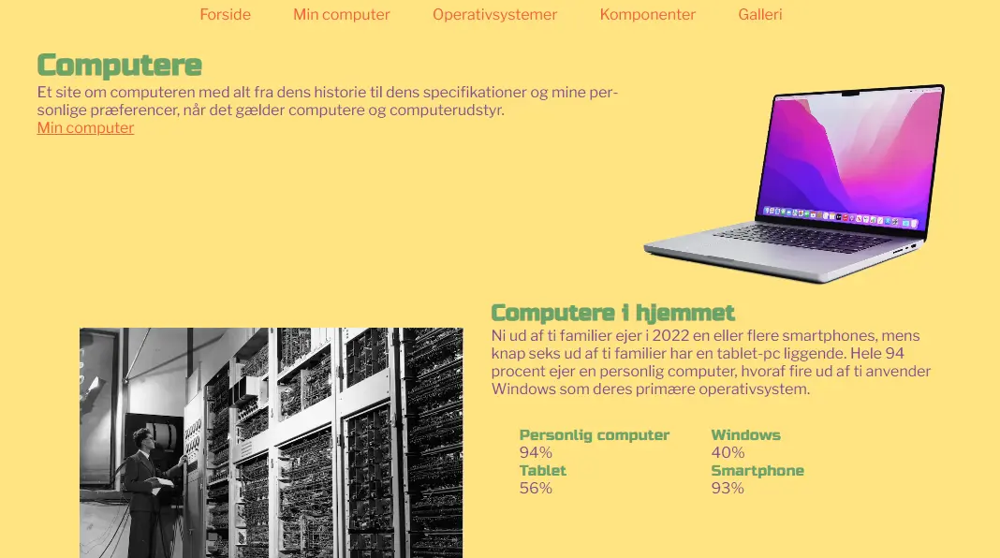
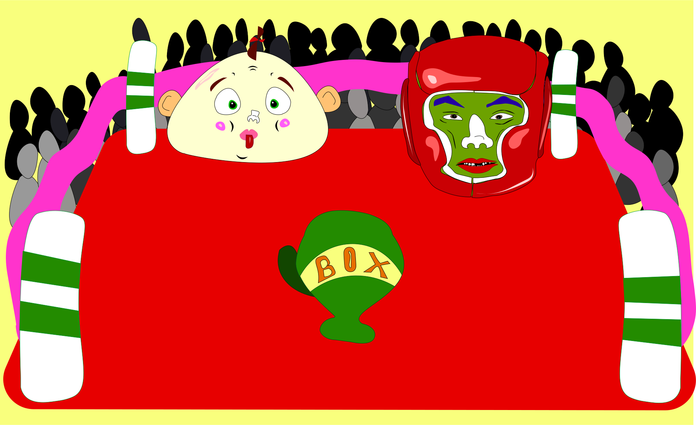

Om mig
Nora Skjevik
Mitt namn är Nora Skjevik, jag är 23 år, jag älskar hundar och studerar multimediadesign på KEA. Jag är ursprungligen från Göteborg. Men, för 1,5 år sedan flyttade jag till hit till Köpenhamn med målet att vidga mina vyer.
Mina projekt
Grundläggende web
Här kan du läsa om Tema 2, där jag lärde mig grundläggande metoder, program och tekniker som har varit avgörande för de andra temana. Du kan också hitta den första uppgiften jag lämnade in.
Grundläggende UX/UI

Läs här om Tema 3, där jag lärde mig mycket om hur man ger den optimala användarupplevelsen och estetiskt anpassad vid utvecklingen av en hemsida. Du kan också hitta länken till hemsidan jag lämnade in.
Animation
Här kan du läsa om hur jag utvecklade mitt helt egna animerade spel under Tema 4. Du kan också läsa om min långa process i utvecklingen av spelet, både visuellt och interaktivt.
Grundläggende innehåll

Här kan du läsa om de två projekt jag lämnade in under Tema 5, som huvudsakligen arbetades fram i grupp. Läs också om hur jag arbetade med videoproduktion och re-design av ett företags webbplats.